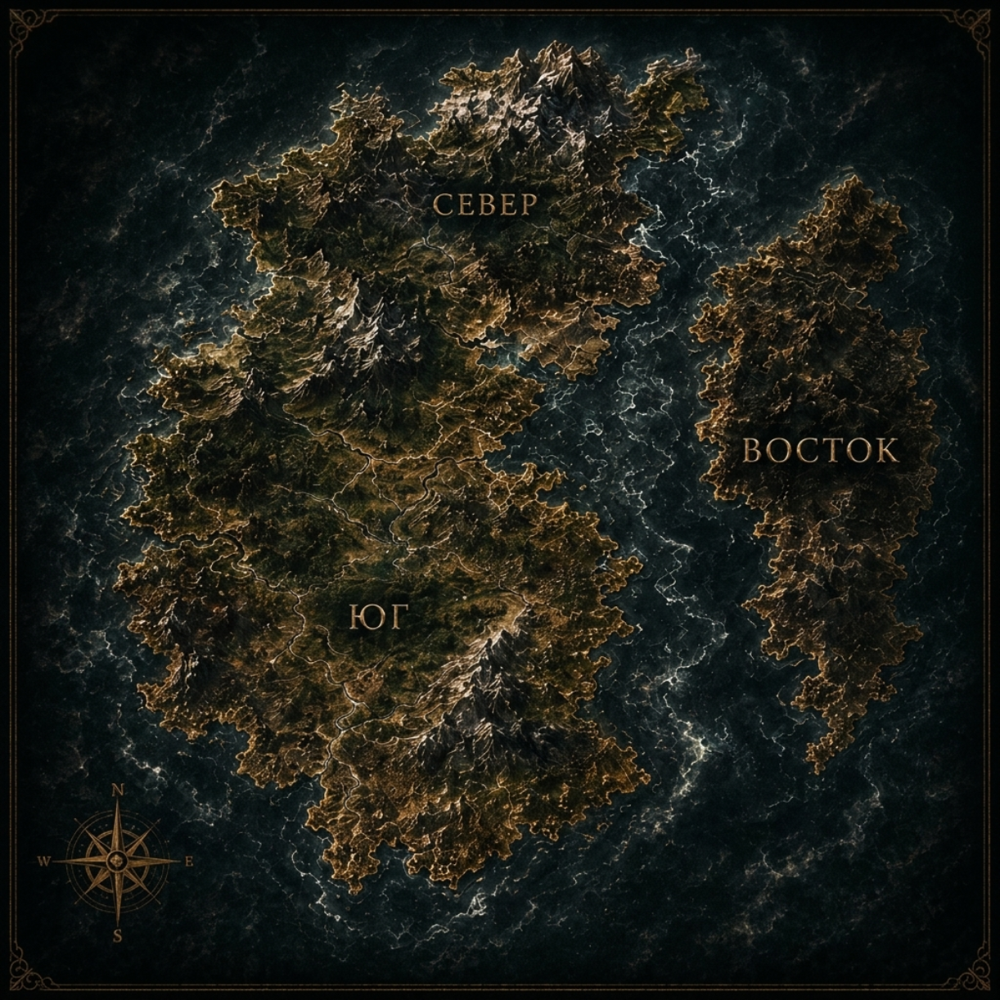

Мир «Опасных Созданий» — континент Галлос, разделённый временем и кровью.
Земля, разделённая надвое временем и кровью. Юг и Север заселялись в разное время и разными народами — и оттого живут по-разному до сих пор.
Заселён около двух тысяч лет назад — переселенцами с Востока. Это древние дома, выросшие из старых корней: старые песни, старая вера, многовековые династии.
Дикие земли, захваченные четыреста лет назад переселенцами с юга. Земли были поделены между 20 Державцами, но подчиняются единой короне.
Древние города и вольные земли. Колыбель южных домов, откуда две тысячи лет назад пришли первые переселенцы. Земли, что не склонились ни перед короной Юга, ни перед короной Севера.

Мир живых. Мир людей, дворов, войн и интриг.
Мавки, волколаки, опустевшие и другая мелкая нечисть — порождения самой Яви. Бывшие люди, в которых примешалась навь. Переходные существа, не истинные обитатели Нави.
Мир за гранью Яви — со своими законами и существами.
Трескуны, костоглоты, болотники — существа, попавшие в Явь через червоточины с верхнего слоя Нави.
Ключ к безопасному миру — камень орочит. Нечисть не может его пройти.
В Ловарре орочит добывают и встраивают в стены: пояс вокруг каждой деревни, камень в кладке городов. Поэтому на Юге безопасно — там не нужны жнецы, люди живут в покое за высокими стенами, и ловаррийки нечисти не боятся. Орочитом укрепляют и гробы: на Юге мёртвых не сжигают, как на Севере, а заключают в гробы из орочита.
Торнхолл — полная противоположность. Дикие, опасные земли, кишащие нечистью, где жнецы — расходный материал.
Переплавленные люди с навьей кровью — оружие против нечисти.
В основе жнеца — ихтор, чёрная кровь: стабилизированная навья кровь, которую вливают человеку при переплавке. Ихтор гуще человеческой крови, и оттого сердце жнеца бьётся медленно и редко. Эта же кровь даёт силу и выносливость, недоступную обычным людям, ускоренную регенерацию ран и притупляет тело: жнецы не чувствуют ни боли, ни холода.
Запас сил жнецов конечен и ограничен «Резервом» — концентрацией навьей крови, стабильность которой поддерживается сумрачным зельем. Эта пропорция нестабильна: чёрная кровь стремится подчинить себе остатки красной. Если в пылу сражения этот критический лимит превышается, запускается необратимая реакция. Разум жнеца сгорает в Нави, а его тело превращается в пустую, хищную оболочку.
Положение жнецов в обществе — в отчётных списках они числятся как «имущество цитадели» над конями и костоглотами.
Орудие охоты жнецов. В каждый свисток вложен кусочек призываемого существа, и его зов приманивает навью тварь — превращая хаос столкновения в бой по правилам жнецов, в охоту, а не в случайную резню.